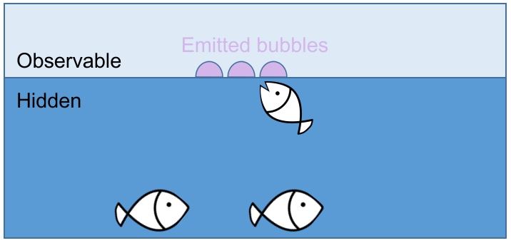

An example hidden Markov model
jupyter: python3 Hidden Markov models (HMMs) are widely used in modeling sequential data, for example xxx.
The core concept of the hidden Markov model is simple: The evolution of a system is not directly observable. The system evolves by its own rule and emitts signals that can be sensed by us. Thus, the model of the system is divided into two parts: The hidden part where the state of the system evolves dynamically following certain rules; and the observable part where we can observe the emitted signals depending on the hidden state.
To give an intuition, imagine a pond, where under the warter surface, there is a group of fish playing a game. At each time step, one of the fish is ‘chosen’ produce a number of bubbles, which are observable only at this time step. Each of the fish has its own preferred number of bubbles. For example, fish 1 prefers to produce two or three bubbles, while fish 2 prefers to produce one buble.
You, as an observer, know nothing about what is happening under the water, e.g. which fish is chosen, what the rule of choosing is, and what each fish’s preference is. The only thing you can observe is how many bubbles are produced at each time step.
Now, after observing the warter furface for long enough time, will you be able to predict how many bubbles you will see in the next time step?

Let’s introduce some notations to formalize the concept:
Assume we have \(n\) fish in total. We label each fish with a number from 1 to \(n\).
At time \(t\), denote the fish chosen at time \(t\) as \(s_t\). For exmaple, if fish 3 is chosen at time point 1, we have \(s_1 = 3\).
We also denote the number of bubbles observed at time \(t\) as \(o_t\). For example, if we observe 7 bubbles at time point 2, we have \(o_2 = 7\).
Now it is time to build a model on how the fish is chosen and how the number of bubbles is generated.
For this, let’s dive into the water and model the game of the fish.
Suppose we know that at time \(t\), the fish chosen was \(s_t\), we can sample the next chosen fish \(s_{t+1}\) from a probability distribution depending on \(s_t\).
Graph
Markov process Transition matrix
Emission probability
- The hidden states ( S_t ) evolve according to a transition probability matrix ( A ), where ( A[i, j] ) is the probability of transitioning from state ( i ) to state ( j ).
- The observations ( O_t ) are generated based on the hidden state ( S_t ) and an emission probability distribution ( B ), where ( B[i] ) defines the probability distribution of observations for state ( i ).
- The initial state distribution is denoted as ( ), where ( ) is the probability of starting in state ( i ).
With these notations, the hidden Markov model can be fully described by the parameters ( = (, A, B) ).
Since the fish can only remember which fish was producing bubbles in the previous time step, not two or more steps before, the choice of the next fish only depend on the previous one. This rule is abstracted as the so called Markov property.
This blog post is inspired by the Sun paper after discussing about it in a journal club.
Thoughts from neuroscience perspective